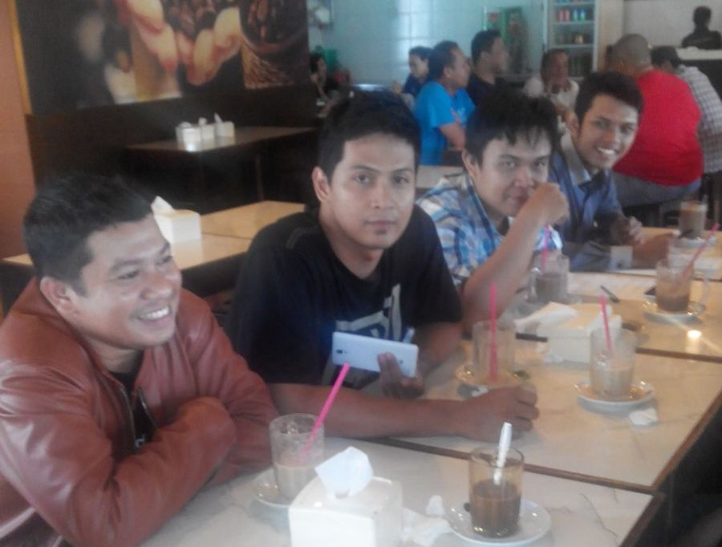

SELAMAT DATANG
Mengamati dan memperhatikan semangat jiwa idealis dari para praktisi IT Development, yaitu dalam keinginannya mengapresiasikan kemampuan dan keinginan belajar menjadi lebih baik, disinilah perlunya dibentuk wadah yang memberi ruang yang tepat bagi mereka untuk saling berbagi informasi dan pengetahuan dalam ruang lingkup kebaikan.
Kita bisa melihat sendiri betapa luar biasanya potensi dari anak-anak bangsa dan sangat mungkin sekali, komunitas ini akan membawa kita kedalam suatu era baru teknologi tinggi
Dengan memegang prinsip kekeluargaan dan kebersamaan, komunitas ini merupakan cikal bakal sesuatu yang besar dikemudian hari.
VISI DAN MISI
- 1. Membangun silaturahmi antar sesama praktisi pengembangan sistem
- 2. Menggabungkan potensi untuk menjadikan sesuatu yang luar biasa.
- 3. Memberi wadah pertukaran informasi dan pengetahuan antar sesama anggota komunitas
- 4. Sebagai wadah menyalurkan kemampuan dan keinginan saling berbagi satu sama lain.
- 5. Mendorong lebih jauh lagi perkembangan teknologi informasi
- 6. Mendorong perkembangan industri ekonomi kreatif dalam negri
- 7. Menciptakan jiwa-jiwa yang produktif dan berorientasi ke depan.